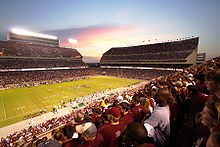
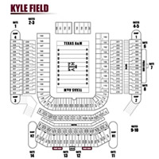

Athletics
The Aggies are a member of the Southeastern Conference in all sports as of July 1, 2012. Previously a charter member of the Southwest Conference until its dissolution in 1996, A&M competed in the Big 12 Conference until June 30, 2012. The school's 20 sports teams are known as the Aggies, and the school's colors are maroon and white. As of April 2011, Aggies have earned 138 Southwest and Big 12 conference regular-season and tournament titles and 11 team national championships. The women's soccer team, formed in 1993, earned 15 consecutive NCAA Tournament appearances from 1995 to 2009, advancing at least as far as the round of 16 in seven of the last eight appearances. The women's volleyball team earned 12 consecutive NCAA Tournament appearances from 1993 to 2004, advancing past the first round each time. In 2004 Sports Illustrated on Campus ranked Olsen Field "the best college baseball venue". Sports Illustrated ranked the university 46th, in a 2002 analysis of "America's Best Sports College[s]" and College Station the 9th best college sports town.
A&M's archrival is the University of Texas. In 2004, sporting events between the Aggies and Longhorns became known as the Lone Star Showdown. The most-watched event in the rivalry is the annual football game held the day of Thanksgiving. Other rivalries include Texas Tech, Baylor University, and the recently renewed rivalries with the University of Arkansas and Louisiana State University.
Football
The Texas A&M Aggies football team represents Texas A&M University in the sport of American football. The Aggies compete in the Football Bowl Subdivision (FBS) of the National Collegiate Athletics Association (NCAA) and the Western Division of the Southeastern Conference (SEC). Texas A&M football claims three national titles and eighteen conference titles since becoming a charter member in the Southwest Conference in December 1914. The team plays all home games at Kyle Field, an 82,589-person capacity outdoor stadium on the university campus. Kevin Sumlin is the current head coach of the Aggies.
Founded in 1894, the football team has won 18 Southwest Conference championships, 3 Big 12 South Division championships, 1 Big 12 championship, and 1 national championship. The team has appeared in 30 bowl games, winning 13, and has produced 41 first Team All-Americans, 5 Academic All-Americans, and 2 Heisman Trophy winners, John David Crow and Johnny Manziel, in 1957 and 2012 respectively. Twenty-one Aggies currently play in the NFL.
Kyle Field
Since 1904, home football games have been played at Kyle Field, a stadium with a current capacity of 83,002. In 2004, CBS SportsLine.com ranked Kyle Field the top football stadium while Sporting News ranked it fourth. The same year Sports Illustrated on Campus ranked an A&M football weekend the third best college football experience.
Kyle Field is regarded as one of the most intimidating college football stadiums in the nation. CBS Sportsline listed Kyle Field as the nation's best with a perfect score in three categories (atmosphere, tradition, and fans). Contributing to its reputation in the 1990s, Texas A&M boasted one of the nation's best home records at 55-4-1, including 31 straight wins at Kyle Field from 1990 to 1995 and 22 straight from 1996 to 2000. From 2000 through 2012, however, the record of Texas A&M at Kyle Field is 56–30 (a winning percentage of 65.1%, down from 93.2% in the 1990s). Through November 24, 2012, the overall Kyle Field record at the site of the playing field is 388-154-19 (71.2%) while the overall record since the stadium's construction in 1927 is 287-140-12 (66.7%).
Basketball
Founded in 1912, the men's basketball team won 11 Southwest Conference championships and 2 Southwest Conference Tournament championships. The team has appeared in the National Invitation Tournament 6 times and in the NCAA Tournament 11 times, of which 3 resulted in Sweet Sixteen appearances, the highest round to which the Aggies have advanced. The women's basketball team has 1 Southwest Conference Tournament championship,1 regular season Big 12 Conference championship and 2 Big 12 Tournament championships, most recently in 2011. The women have advanced to 8 NCAA Tournament appearances, winning the National Championship in 2011. They have also competed in the WNIT twice, winning that tournament in 1995.
The men's basketball team was coached by head coach Mark Turgeon for four years until he left for the head coaching position at the University of Maryland. The current head basketball coach is Billy Kennedy; he is entering his second season and leading the Aggies into the Southeastern Conference. The women's team has been coached by Gary Blair since 2003. Home games are played at the 12,989-seat Reed Arena. G. Rollie White Coliseum, formerly the home of the volleyball and basketball teams, hosted basketball games before Reed Arena opened in 1998.